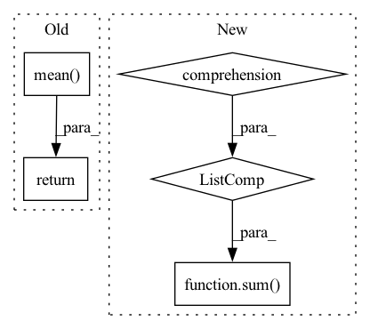

Pattern ID :41491

Before Change
// adjust loss to account for number of classes
dice_score = dice_score / targets.shape[1]
return dice_score.mean()
__all__ = ["ce", "ohemce", "dice"]
After Change
def forward(self, preds, targets: Tensor) -> Tensor:
if isinstance(preds, list):
return sum([w * self._forward(pred, targets) for (pred, w) in zip(preds, self.aux_weights)])
return self._forward(preds, targets)
In pattern: SUPERPATTERN
Frequency: 3
Non-data size: 5
Instances
Fragment ID: 116620439
Project Name: sithu31296/semantic-segmentation
Commit Name: b68900992fb24dd5166b2b34e3d35d19493d747d
Time: 2021-08-21
Author: sithu31296@gmail.com
File Name: utils/losses.py
M Class Name: Dice
N Class Name: Dice
M Method Name: forward(3)
N Method Name: forward(3)
M Parent Class: nn.Module
N Parent Class: nn.Module
M File Name: utils/losses.py
N File Name: utils/losses.py
M Start Line: 48
M End Line: 62
N Start Line: 77
N End Line: 80
'>
Before Change
multiprocess=True)
peak_memory.append(rss)
return np.median(peak_memory) if use_median else np.mean(peak_memory)
After Change
model(**inputs)
if device == "cpu":
peak_memory = sum([key.cpu_memory_usage for key in p.key_averages()])
else:
peak_memory = sum([key.cuda_memory_usage for key in p.key_averages()])
return peak_memory
'>
Fragment ID: 116620437
Project Name: microsoft/archai
Commit Name: f966cd315f5e8f126a3296c0852981a9249b309b
Time: 2022-12-16
Author: gth.rosa@uol.com.br
File Name: archai/nlp/nas/search_utils/constraints.py
M Class Name: AnonimousClass
N Class Name: AnonimousClass
M Method Name: measure_peak_memory(5)
N Method Name: measure_peak_memory(7)
M Parent Class:
N Parent Class:
M File Name: archai/nlp/nas/search_utils/constraints.py
N File Name: archai/nlp/nas/search_utils/constraints.py
M Start Line: 80
M End Line: 123
N Start Line: 106
N End Line: 115
'>
Before Change
if loss_hard.numel() < n_min:
loss_hard, _ = loss.topk(n_min)
return torch.mean(loss_hard)
class Dice(nn.Module):
def __init__(self, delta: float = 0.5):
After Change
def forward(self, preds, labels: Tensor) -> Tensor:
if isinstance(preds, list):
return sum([w * self._forward(pred, labels) for (pred, w) in zip(preds, self.aux_weights)])
return self._forward(preds, labels)
class Dice(nn.Module):
'>
Fragment ID: 116620436
Project Name: sithu31296/semantic-segmentation
Commit Name: b68900992fb24dd5166b2b34e3d35d19493d747d
Time: 2021-08-21
Author: sithu31296@gmail.com
File Name: utils/losses.py
M Class Name: OhemCrossEntropy
N Class Name: OhemCrossEntropy
M Method Name: forward(3)
N Method Name: forward(3)
M Parent Class: nn.Module
N Parent Class: nn.Module
M File Name: utils/losses.py
N File Name: utils/losses.py
M Start Line: 25
M End Line: 37
N Start Line: 46
N End Line: 49